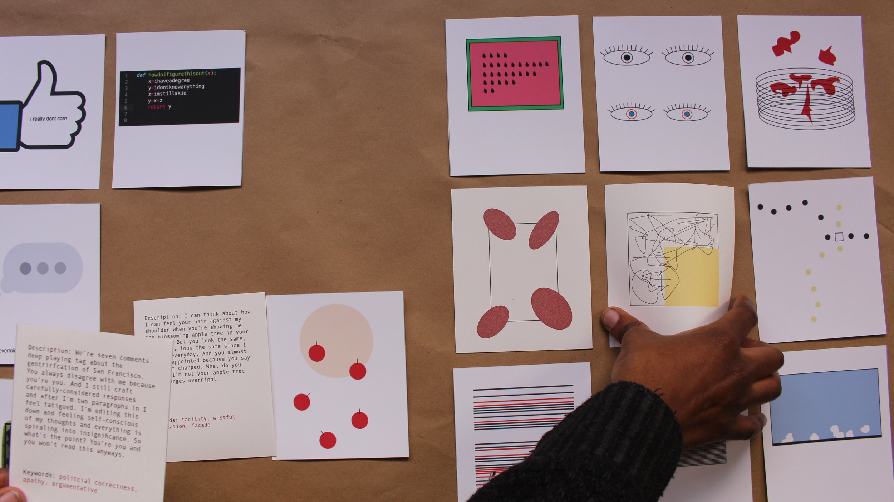
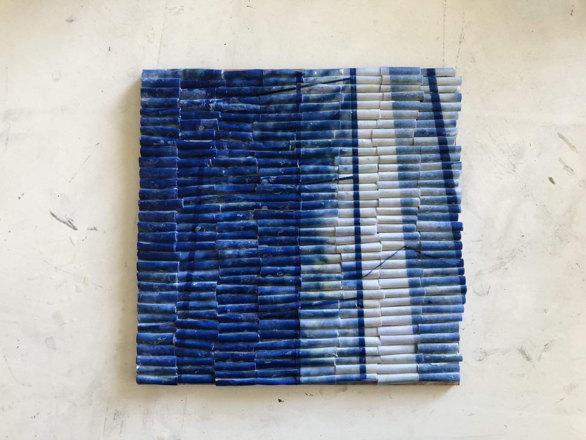

Vigital Vernacular is persuasion, strategy game in which participants analyze visual symbols and construct their own meaning within restrictions.
Language for Digital Emotions describes arising emotions/states of being that we haven't defined.
The Listening Enhancers are a body extension that displays the wearer's attentiveness in a conversation.
An experiment of layering imagery over a cyanotype print. Cyanotypes involve a dying and printing process which is light sensitive and reactive to water exposure
I experiment with color within the constraints of small compositions. This specific gouache study is based off of a Tomory Dodge painting.